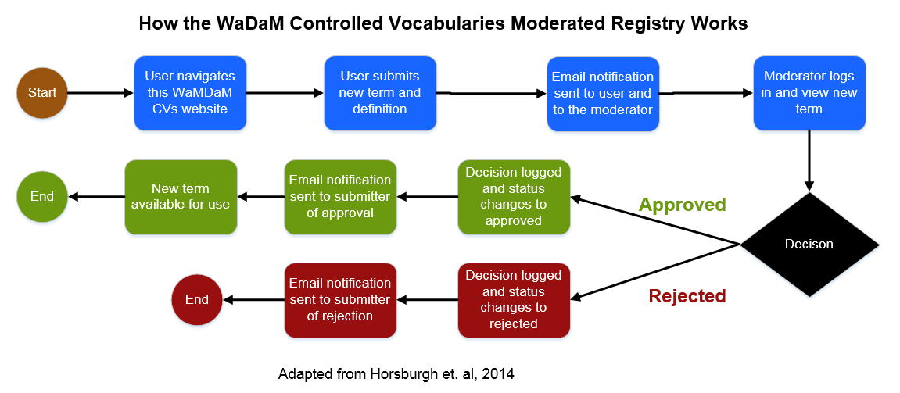
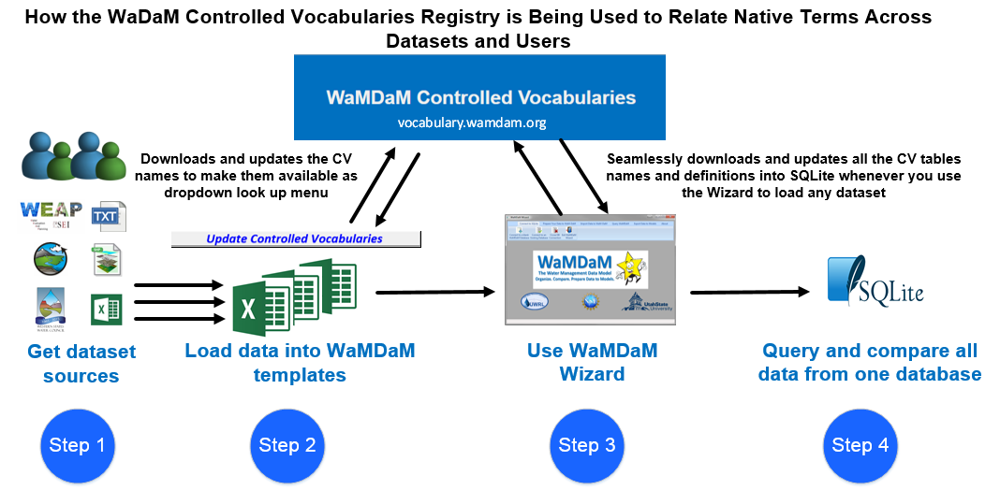

Controlled vocabularies registry¶
We deployed an online-hosted controlled vocabularies system under our full control to physically implement the controlled vocabularies design (Feature # 6), allow multiple users to access, and reuse consistent vocabularies across WaMDaM database instances and machines. We adapted an existing online registry to manage WaMDaM controlled vocabularies across users and database instances at http://vocabulary.wamdam.org (Horsburgh et al., 2016; Horsburgh et al., 2014). Controlled vocabularies for water management data in WaMDaM can be more extensive and specific than existing controlled vocabularies in CUAHSI. First, WaMDaM users have Object Type more specifically (e.g., Reservoir) than the equivalent Site Type (e.g., Lake, Reservoir, Impoundment) in CUAHSI. Second, WaMDaM “Attributes” extend beyond the often-quantitative time series data of CUAHSI “Variables” and can include qualitative descriptive data (e.g., Dam Purpose) (Feature #5). Third, WaMDaM controls the Instance name whereas the CUAHSI site code is uncontrolled. Fourth, WaMDaM has additional categories of vocabularies beyond Object Type, Attributes, Instances (not shown in Figure 3 for simplicity) that do not exist in CUAHSI like the Attribute Data Type, Descriptor value, and season name that control categorical data values.
Modelers have the option to use WaMDaM controlled vocabularies, submit suggestions to add new terms within the online registry, or use their own native vocabularies without registering them with WaMDaM’s. We populated the system with example WaMDaM controlled vocabularies for the datasets used in the use cases. Molders can use the CV system seamlessly as they populate their datasets into the Excel Workbook template. Within the Excel template, there is Visual Basic script button that downloads and updates look-up menus for all controlled vocabularies so users can register their native terms in each Excel workbook sheet.
This WaMDaM controlled vocabularies system may serve as a basis for a system the water resources systems community can use to review existing terms and add new terms. For example, a user can view the controlled vocabularies and their definitions for the Object Types table at http://vocabulary.wamdam.org/objecttype/. If the user wants to use a new controlled Object Type, they can click New and fill out and submit a form that includes the term, its definition, and other metadata that describe its source. Once submitted, we will receive an email of the submission and decide to accept, add, or reject it (see Horsburgh et al. (2014) for more details).
Controlled Vocabulary tables¶
The three key controlled vocabulary that are needed to basic data quries are:
CV_AttributeName, CV_InstanceName, and CV_ObjectType
CV_AggregationStatistic¶
A term for describing the statistical action used to calculate over recorded time series values within a time interval. For example, 100 cfs of delivery target to a demand site is a "cumulative" aggregation statistic calculated over a time interval like a month.
CV_AttributeDataType¶
A term for describing the supported types of data that an attribute in WaMDaM can take based on logical and physical groupings like numeric, text, time stamped values, and parried categorical values. For example, numeric values, descriptor value, electronic files, time series, and multi attribute series.
CV_AttributeName¶
A Term describing the name of quantitate or qualitative property of a water system component (e.g., reservoir).
CV_DescriptorValues¶
A term for describing descriptive values (characters as numeric or strings) for an attribute. The descriptor values can be shared across attributes of systems components like land use "Grass_Pasture" or irrigation type "Flood", or site code as "10000010"
CV_DualValueMeaning¶
A Term describing the specific meaning of Boolean data values (True, False)for an attribute.
CV_ElectronicFileFormat¶
A term for describing the supported physical format of files loaded into WaMDaM as values to attributes(e.g., csv, jpg, NETCDF).
CV_ElevationDatum¶
A term for describing vertical datums. Vertical datums are used in WaMDaM to specify the origin for elevations associated with node instance in networks.
CV_InstanceName¶
A term for describing the name of a specific node or link system component in a specific location which can related synonymous native instance terms (e.g., Hyrum = Hrm & Hyrum Reservoir).
CV_MethodType¶
A term for describing types of Methods associated with recording or generating data values to attributes. Example method types are like "expert opinion", "field procedure", "model simulation".
CV_ObjectType¶
A term for describing a built or natural water system component .
CV_ObjectTypology¶
A term for describing the category of an Object Type as either: Node, link, network.
CV_SeasonName¶
A term for describing a categorical value that may correspond to numeric values of an attribute. The CategoricalValue represents steps in time (e.g., Winter, Summer, March, April) or space (e.g., categorical levels of reservoir levels (e.g., inactive, conservation, flood)
CV_SpatialReference¶
A term for describing a geographic reference to all the node instances that belong to the same Master Network.
CV_Units¶
A term for describing the name of the Unit of data value of an attribute.

